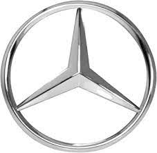
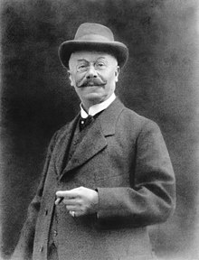
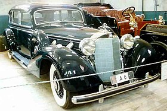
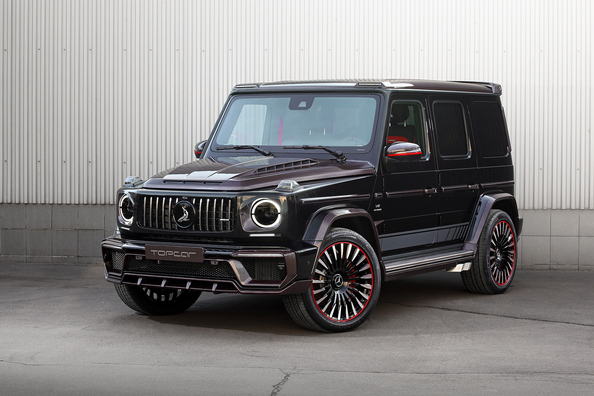
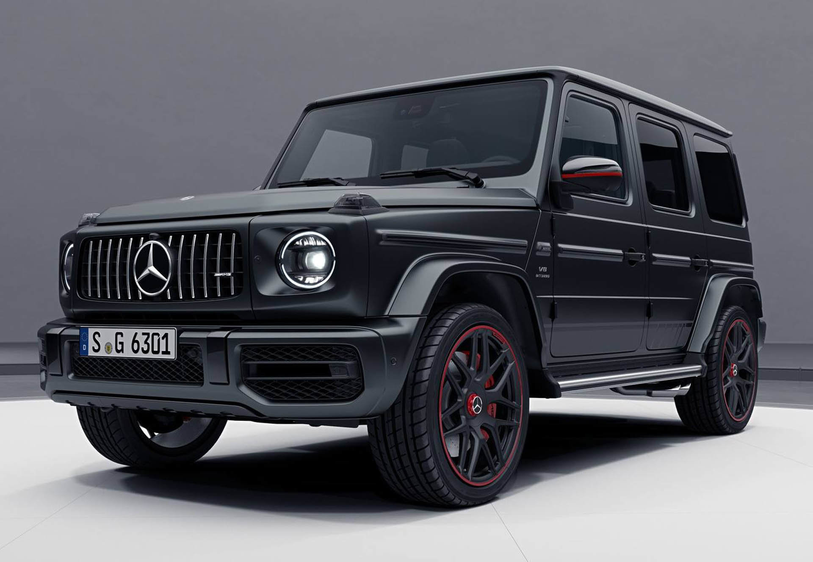
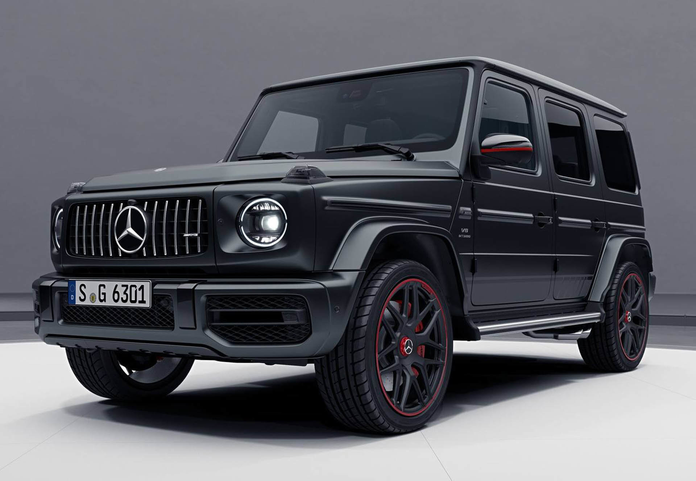

Mercedes-benz
Mercedes-Benz avtobus va yuk avtoulovlari brendidir. Mercedes-Benz shtab-kvartirasi Shtutgartda joylashgan. Mercedes-Benz Audi va Bmw qatorida „Olmoniya katta uchligiga“ kirib, dunyo bo'ylab eng ko'p luks avtomobil sotadigan ishlab chiqaruvchilardan biridir

Ma'lumot
Mercedes-Benz 1886-yili asos solingan. Tashkilotchilar Karl Bents, Gotlib Daymler, Vilgelm Maybax. Joylashuvi: Shtutgart, Germaniya.
Mahsuloti: Yengil avtomobillar
yuk tashuvchi avtomobillar
avtobuslar
dvigatellar
Web sahifasi: mercedes-benz.de
Asos solinishi
Brendning kelib chiqishi Daimler-Motoren-Gesellschaftning 1901-yildagi Mercedes va Karl Benzning 1886-yildagi Benz Patent-Motorwagen avtomobillarida yotadi , bu o'ziyurar avtomobildagi birinchi ichki yonuv dvigateli sifatida keng e'tirof etiladi . Brendning shiori - "eng yaxshi yoki hech narsa"
Mercedes-Benz o'zining kelib chiqishini Karl Benzning  avtomobilda birinchi ichki yonuv dvigatelini yaratishi bilan bog'liq bo'lib, Benz Patent Motorwagen -da ko'rilgan - Berta Benzning sovg'asi tomonidan moliyalashtirilgan va Berta Benz-yil yanvarda patentlangan - va Gottlib Daimler va ularning muhandisi Vilgelm Maybax o'sha yilning oxirida benzinli dvigatel qo'shilgan stend aravachasi konvertatsiyasini taqdim etdi. Mercedes avtomobili birinchi marta 1901-yilda Daimler-Motoren-Gesellschaft (DMG) tomonidan sotilgan .
avtomobilda birinchi ichki yonuv dvigatelini yaratishi bilan bog'liq bo'lib, Benz Patent Motorwagen -da ko'rilgan - Berta Benzning sovg'asi tomonidan moliyalashtirilgan va Berta Benz-yil yanvarda patentlangan - va Gottlib Daimler va ularning muhandisi Vilgelm Maybax o'sha yilning oxirida benzinli dvigatel qo'shilgan stend aravachasi konvertatsiyasini taqdim etdi. Mercedes avtomobili birinchi marta 1901-yilda Daimler-Motoren-Gesellschaft (DMG) tomonidan sotilgan .
Daimler Motoren Gesellschaft (DMG) bilan ishlagan evropalik avtomobil tadbirkori Emil Jellinek  1902 yilda savdo belgisini ro'yxatdan o'tkazib, 1901 yilgi Mercedes 35 ot kuchiga ega avtomobilga qizi Mercedes Jellinek nomini berdi .
1930-yillar davomida Mercedes-Benz 770  modelini ishlab chiqardi, bu avtomobil Germaniyaning natsistlar davrida juda mashhur edi. Ma'lumki, Adolf Gitler hokimiyatda bo'lgan davrida o'zgartirilgan o'q o'tkazmaydigan old oynalar bilan ushbu avtomobil modelida haydagan. Hozirda saqlanib qolgan 770 ta modelning aksariyati auktsionlarda xususiy xaridorlarga sotilgan. Mashinalardan biri hozirda Ontario shtatining Ottava shahridagi Urush muzeyida namoyish etilmoqda .
2022 yilning may oyida Mercedes-Benz yaqinda eng qimmat avtomobilni 142 million dollarga sotganini e'lon qildi. Mashina 1955 yilda ishlab chiqarilgan juda kam uchraydigan Mercedes-Benz_300_SLR  modeli bo'lib, u nemis avtomobil ishlab chiqaruvchilari kolleksiyasida saqlangan va xususiy egasi tomonidan sotib olingan. Mercedes e'lonida aytilishicha, sotuv Mercedes-Benz jamg'armasini tashkil etishga sarflanadi.
modeli bo'lib, u nemis avtomobil ishlab chiqaruvchilari kolleksiyasida saqlangan va xususiy egasi tomonidan sotib olingan. Mercedes e'lonida aytilishicha, sotuv Mercedes-Benz jamg'armasini tashkil etishga sarflanadi.
uning brendi 2010-yil 25,2 mlrd Aqsh Dollari deb belgilangan. U Yengil avtomobillar brend narxi bo'yicha 2-o'rinni band etib turibdi..
2021-yil mart oyida «Mercedes-Benz» Xitoy bozoridan 2,6 million avtomobilni qaytarib olishga qaror qildi. Qaror ushbu mamlakatda ishlab chiqarilib, import qilingan avtomobillarga ham, modellarga ham tegishli bo'ladi. Avtomobillarni qaytarib olishga ulardagi dasturiy ta'minot — favqulodda xizmatlarni chaqirish tizimida qayd etilgan muammo sabab bo'lgan Nosozlik tufayli tizim avtohalokat sodir bo'lganidan keyin favqulodda xizmatlarga noto'g'ri ma'lumotlar yuborgan va oqibatda qutqaruvchilar noto'g'ri manzillarga borgan

 
